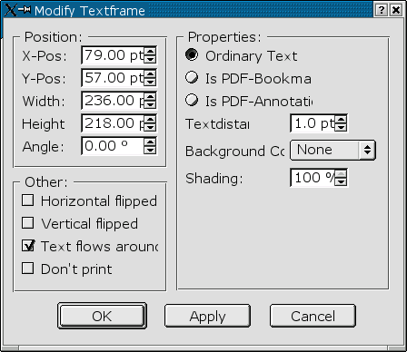
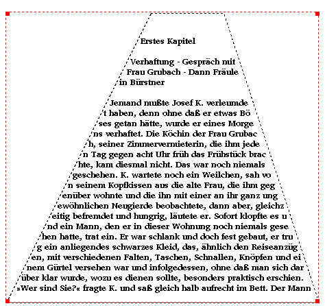
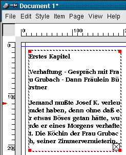

4.1.1 Der Textrahmen
Mittels des Symbols  können Sie einen Textrahmen beliebig
auf einer Seite plazieren. Anschließend können Sie Text direkt eingeben (aktivieren Sie dazu das Symbol
können Sie einen Textrahmen beliebig
auf einer Seite plazieren. Anschließend können Sie Text direkt eingeben (aktivieren Sie dazu das Symbol  in der Werkezugleiste) oder aus einer Textdatei laden (Menü File / Get Text). Anschließend können Sie den
Text über das Menü (siehe auch Punkt 2.1.3, "Style") oder die Maßpalette (siehe auch Punkt 2.2.2, "Die Maßpalette") formatieren.
in der Werkezugleiste) oder aus einer Textdatei laden (Menü File / Get Text). Anschließend können Sie den
Text über das Menü (siehe auch Punkt 2.1.3, "Style") oder die Maßpalette (siehe auch Punkt 2.2.2, "Die Maßpalette") formatieren.
Die Eigenschaften des Textrahmens selber können Sie über das Menü "Item / Modify" abändern:

Bitte beachten Sie: In früheren Scribus-Versionen konnte man in diesem Dialog mittels "No Fill"
angeben, ob der Rahmen eine Hintergrundfarbe haben soll oder nicht. Dies geschieht nun über die
Farbe "None" in der Colors-Palette.
Ein Textrahmen hat nach dem Einfügen immer eine rechteckige Form. Über Item / Shape können Sie dem Text in eine ovale Form
bringen oder mittels Shade / Edit Frame eine beliebige Form festlegen:

Sollte ein Text zu lang sein, um ganz in einen Rahmen zu passen, so wird Ihnen dies durch ein kleines Kreuz in der unteren
rechten Ecke des Textframes angezeigt:

In diesem Fall können Sie mehrere Rahmen mittels des  - Symbols miteinander verketten. Legen Sie dazu einen weiteren Textrahmen an und markieren Sie diesen. Klicken
Sie anschließend mit dem Verkettungswerkzeug auf den anderen Rahmen. Ist ein eingefügter Text für einen dieser Rahmen zu lang,
fließt er nun automatisch in dem anderen Rahmen weiter. Um die Verkettung wieder aufzulösen, klicken Sie einmal mit dem
- Symbols miteinander verketten. Legen Sie dazu einen weiteren Textrahmen an und markieren Sie diesen. Klicken
Sie anschließend mit dem Verkettungswerkzeug auf den anderen Rahmen. Ist ein eingefügter Text für einen dieser Rahmen zu lang,
fließt er nun automatisch in dem anderen Rahmen weiter. Um die Verkettung wieder aufzulösen, klicken Sie einmal mit dem
 - Werkzeug auf einen der verketten Rahmen.
- Werkzeug auf einen der verketten Rahmen.